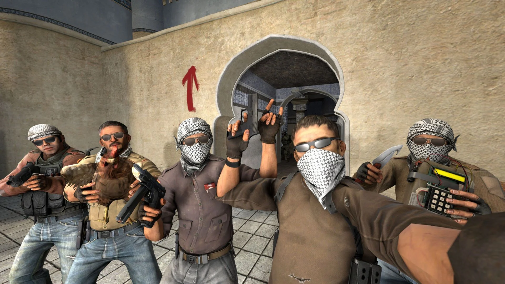

Геймплей В чем заключается геймплей игры CS:GO. Геймплей игры заключается в противостоянии двух команд counter terrorist и terrorist. KT должны защитить плэнт от террористов, что бы они не заложили взрывчатку. Так же есть зона, где террористы не должны отдать заложников контер террористам. Игра заканчивается, когда одна из команд достигает 16 побед. В начале раунда каждому игроку даётся 800$ для покупки гранат, бронирование, и оружие. Также на 15 раунде идёт смена сторон контер террористы перемещаются за террористов, а террористы в контр террористы. За выигранную игру вам могут поднять звания. И вы можете получить вещи которая стоит реальных денег. В каждой команде по 5 игроков Киберспорт Что же такое киберспорт - командное или индивидуальное соревнование на основе видеоигр. В России признан официальным видом спорта. В чем же заключался киберспорт в играх и что давало это занятие. В наши дни киберспорт является самой лучшей работой. В чем же важен киберспорт- Киберспорт развивает не только игровые способности, заложенные в программе, но и мышление, логику, многое другое, что востребовано в современном мире настоящим поколением. Я считаю, что перспективы киберспорта как вида спорта, важны для развития подрастающего поколения. Киберспорт может развить у детей стратегическое мышление, командную работу, общение, лидерство, навыки работы и укрепление уверенности. Таким образом, киберспорт не только имеет множество преимуществ для здоровья, но также может быть перспективным направлением в будущем.
